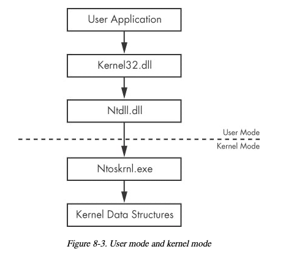
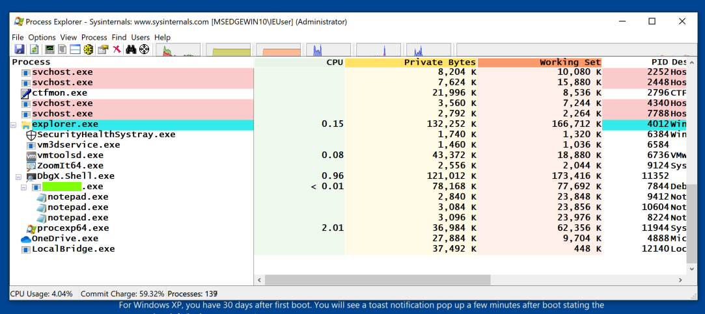
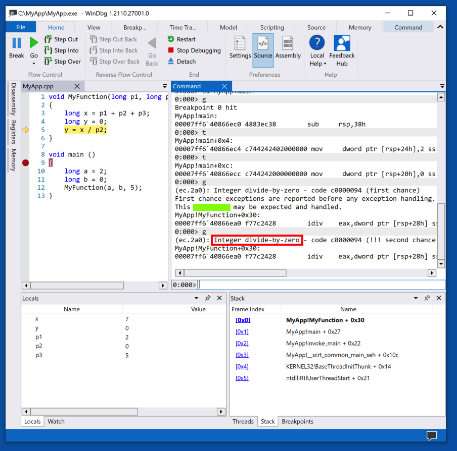
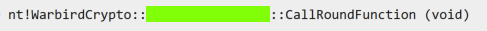
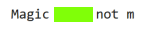
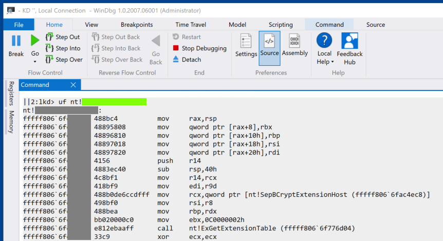

Adapted from the book Practical Malware Analysis: The Hands-On Guide to Dissecting Malicious Software.
The learning objective of this project is for students to familiarize with WinDbg commands for kernel debugging. The kernel is the heart of the operating system, and it resides in the file ntoskrnl.exe. If we want to trace back the system libraries to the kernel functions, instead of merely having its effect returned, we should utilize kernel-debugging tools. Among them, WinDbg is the most useful one provided by Microsoft.All system APIs will finally transfer the invocation to the kernel, as shown in the figure below, from the "Practical Malware Analysis" book.

This project has been tested on the pre-built SEED VM (Ubuntu 20.04 VM).
Launch Process Explorer as Administrator. Scroll to the bottom and find the Notepad process. (There may be more than one, as shown below.) The flag is the name of the parent process, covered by a green box in the image below.

The flag is covered by a green box in the image below.

Find the function shown in the image below.
The flag is covered by a green box in the image below.

Find the word Magic in nt.
The flag is covered by a green box in the image below.

Find this code.
The flag is covered by a green box in the image below.

This lab is due Tuesday [12/05/2023] @ 11:45 AM (MST).
Please submit your write-up in project4/README.md within your private GitHub repository.
You need to submit a detailed lab report to describe what you have done and what you have observed, including relevant screenshots, command snippets, and code snippets. For any important command snippets or code snippets you must also include a supporting explanation. Simply including commands/code without any explanation will not receive credit. For any interesting or surprising observations, you also need to provide explanations. You are encouraged to pursue further investigation, beyond what is required by the lab description.
Your README.md must be written up in valid Markdown.
Please also include any accompanying resources (e.g., source code, makefiles, screenshots).
Please do not commit/include any unnecessary files within your repository (I strongly recommend using a .gitignore file).
For general tips on how to write and format your submission, please see the Project Info & Tips page.